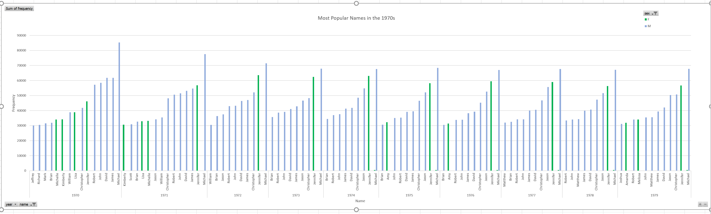

I selected this dataset because it offered a very complete view of naming choices in the US. I retrieved the data from data.gov, which links to this site on the the Social Security Website, providing some background on the collection of this dataset. Looking at name data can offer an insight into the culture and influences on the United States over a given period of time, especially when analyzing a change over time in a certain name's popularity. In analyzing the data in a spreadsheet, I faced several difficulties in the sheer number of names and the great variation in their popularity, ranging from 50,000 people to 5 people. This made it somewhat difficult to graph given my lack of Excel expertise. To adjust for this, I only took names used 500 times or more to make it more usable. Some other changes I made were to remove names like "baby" or "unknown."
